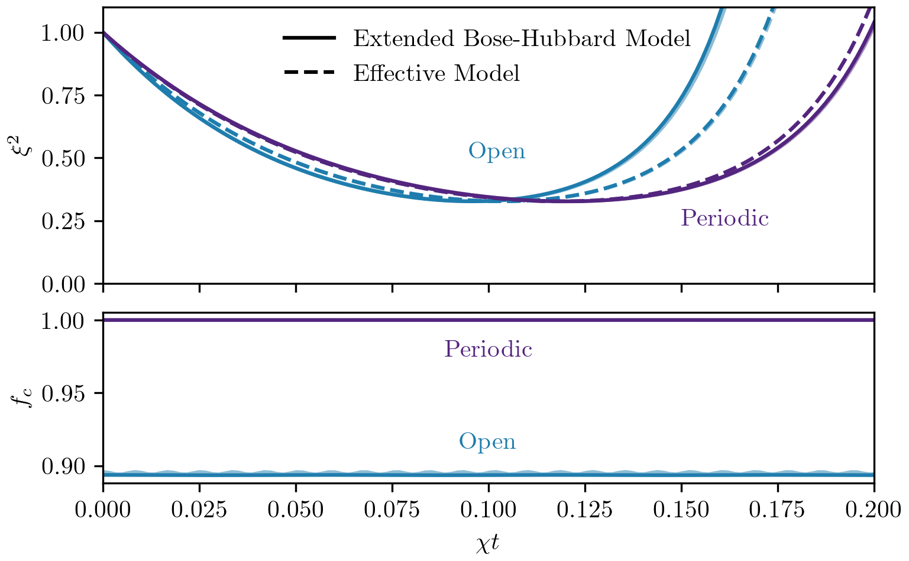

<style> .container{ display: flex; justify-content: center; align-items: center; } .col { flex: 1; } </style> ### Practical Spin-Squeezing with Ultra-Cold Atoms in Optical Lattices #### Doctoral Thesis Defense Author: M.Sc. Tanausú Hernández Yanes Supervisor: Dr. Hab. Emilia Witkowska Institute of Physics of the Polish Academy of Sciences <!-- <a href="https://journals.aps.org/prl/abstract/10.1103/PhysRevLett.129.090403">PhysRevLett.129.090403</a> --> <img src="img/logos/ifpan_logo.png" width="10%"> <img src="img/logos/ncn_logo.svg" width="10%"> Note: Some quick sentence about what OAT, TACT and squeezing means as an intro. --- ### Thesis Structure - Collection of manuscripts - Introduction to squeezing, system under study and methods - 4 papers about spin squeezing generation - 1 paper (**just accepted in PRA**) about Bell correlations of spin squeezed states under occupation defects - Conclusions of the overall work --- ### Spin-squeezing <img height =400px src="img/raman_sq_css.jpg"> <img height =400px src="img/raman_sq_sss.jpg"> [Jian Ma et al, Quantum spin squeezing, Physics Reports Vol. 509 (2011)](https://doi.org/10.1016/j.physrep.2011.08.003) --- ### Dynamical generation of squeezed states `$\left|\Psi(t)\right> = e^{-i\hat{H}t}\left|\Psi(0)\right>$` --- ### Example Hamiltonian: One Axis Twisting <div class='container'> <div class='col'> ` $$ \begin{align} \hat{H}_\mathrm{OAT} &= \chi \hat{S}_z^2 \\ &= \chi \sum_{i,j} \hat{S}^z_{i} \hat{S}^z_{j} \end{align} $$` `$\xi^2 \propto N^{-2/3}$` </div> <div class='col'> </div> </div> Note: Cite Kitagawa-Ueda --- ### Example Hamiltonian: One Axis Twisting <video controls class='r-stretch'> <source data-src='video/Q function OAT, N=100, M=100, tf=0.46, chi=1, proj=hammer, mf_style=quiver.mp4' type="video/mp4" /> </video> --- ### Fermi-Hubbard Model `$ \hat{H} = \sum_{j=1}^{M'} \hat{H}^{\text{tunnel}}_{j,j+1} +\sum_{j=1}^M \hat{H}^{\text{int}}_j $` --- ### Bose-Hubbard Model ``$ \hat{H} = \sum_{j=1}^{M'} \hat{H}^{\text{tunnel}}_{j,j+1} +\sum_{j=1}^M \hat{H}^{\text{int}}_j $`` --- ### Dipolar interactions in the Superfluid Phase (Bosons) <div class='container'> <div class='col'> </div> <div class='col'> </div> <div class='col'> - Anisotropic TACT - Heisenberg limited squeezing until $\eta \ll 1$. </div> </div> <div style='font-size:.8em'> [M. Dziurawiec et al, Phys. Rev. A 107, 013311 (2023)](https://journals.aps.org/pra/abstract/10.1103/PhysRevA.107.013311) </div> Note: OBC give similar results for $N\to\infty$. Time scale similar to TACT, squeezing scaling as TACT --- ### Atom-Light Coupling in the Mott-insulating phase (Fermions) <!-- <img class='r-stretch' src="img/setup.svg"> --> <div class='container'> <img src="img/setup.svg" style='width:50%;'> <div class='col'> - Heisenberg XXX model - Periodic boundaries: OAT (one laser) and TACT (two lasers) - Open boundaries: OAT and anisotropic TACT </div> </div> <div style='font-size:.8em'> [T. Hernández Yanes et al, Phys. Rev. Lett. 129, 090403 (2022)](https://doi.org/10.1103/PhysRevLett.129.090403) [T. Hernández Yanes et al, Phys. Rev. B 108, 104301 (2023)](https://doi.org/10.1103/PhysRevB.108.104301) </div> Notes: - Light acts as classical field (Raman coupling) - Complex model in OBC, can be adjusted with parameters --- ### Comparing Periodic and Open Boundary Conditions --- ### Imperfections and Holes in the Mott insulating phase (Bosons) <div class='container'> <div style='width:40%'> </div> <div class='col'> - t-J model - OAT from contact interactions anisotropy - OAT+Rot. from inhomo. magnetic field - Different behaviour against holes, subsystems evolve independently </div> </div> <div style='font-size:.8em'> [T. Hernández Yanes et al, Phys. Rev. B 109, 214310 (2024)](https://doi.org/10.1103/physrevb.109.214310) </div> --- ### Entanglement of squeezed states under occupation defects (Bosons) <div class='container'> <div class='col'> <img src='img/fig1_10.svg'> </div> <div class='col'> - We test 'local realism' of squeezed states under occupation defects - Data-driven and based on idealized toy model - Equivalent to a convex optimization problem </div> </div> $L(A,h) = \mathrm{Tr}(A\tilde{C}) + \vec{h}\cdot\vec{M} + M E_\max \ge 0$ [T. Hernández Yanes et al, Arxiv:2409.02873 (Pre-print, 2024)](https://arxiv.org/abs/2409.02873) --- <div class='container'> <div class='col'> </div> <div class='col'> </div> </div> - t-J model - Two-site Bell correlator under occupation defects </div> <div style='font-size:.8em'> </div> --- ### Conclusions - Relatively simple systems to generate spin-squeezed states in the 1D optical lattice with ultra-cold atoms - Catalogue of setups with different limitations and advantages - Novel analysis of squeezing losses due to holes - Future prospects: large spin, higher dimensions and more complex models Note:ignored decoherence losses due to temperature, dephasing and losses as they are already in the literature. --- ### Thank you <div class='container' style='font-size:.5em;'> <div> G. Žlabys <br> </div> <div> Y. Baamara <br> </div> <div> M. Dziurawiec <br> </div> <div> M. Plodzień <img height=125px src="img/Marcin.jpg"> <br> </div> <div> A. Niezgoda <br> </div> <div> M. Mackoit <!--Sinkevičienė--> <br> <img height=30px src="img/logos/vilnius_logo.svg"> </div> <div> D. Burba <br> <img height=30px src="img/logos/vilnius_logo.svg"> </div> </div> <div class='container' style='font-size:.5em;'> <div> M. Lewenstein <br> </div> <div> M. Gajda <br> <img height=30px src="img/logos/ifpan_logo.png"> </div> <div> A. Sinatra <br> </div> <div> G. Juzeliūnas <br> <img height=30px src="img/logos/vilnius_logo.svg"> </div> <div> E. Witkowska <br> <img height=30px src="img/logos/ifpan_logo.png"> </div> </div> --- # Questions from Reviewers --- ### Questions from Reviewers ## Dr. hab. Krzysztof Jachymski --- **Dipolar interactions in the superfluid regime** <!-- > In the additional material, the author derives the dipole interaction in a somewhat confusing way in the language of spin operators and discusses the role of boundary conditions, which turn out to be of considerable importance for the small size of the system (examples were generated for N = 8). The difference appears to be due to the long-range nature of the impact. Could the author comment on this result, in particular the expected behavior for larger numbers of meshes? --> > Could the author comment on [boundary condition effects on the effective model], in particular the expected behaviour for larger numbers of lattice sites? ---- ### OBC Effective Model `` $$ \begin{equation} \hat{V}_\mathrm{dd} \simeq \frac{\gamma^2}{f_c^2} \left( \zeta(3) - \frac{\zeta(2)}{M} \right) \left( \tilde{S}^2 - 3 \tilde{S}_x^2 \right) \end{equation} $$`` As $f_{c} \le 1$, expect faster dynamics than PBC. $\zeta(2)/M$ is less relevant. Expect $\lim_{M\to\infty}f_{c} = 1$. ---- Expression converges to PBC result `` $$ \begin{equation} \hat{V}_\mathrm{dd} \simeq \gamma^2 \zeta(3) \left( \tilde{S}^2 - 3 \tilde{S}_x^2 \right) \end{equation} $$`` ----  $J = 10^3 U_{\uparrow\downarrow}$ Going deeper in SF regime reduces oscillations in $f_{c}$. --- **Dipolar interactions in the superfluid regime** > A question also arises about the role of the geometry of the system in the rate of entanglement generation, as one could think about using the anisotropy of the dipole interaction and some optimization of the particle alignment. ---- <!-- This is out of the scope of the thesis (1D systems). But let us obtain a superfluid model under PBC in the general 3D case ... --> `` $$ \begin{split} \hat{V}_\mathrm{dd} =& \frac{1}{8} \sum_{j,k\ne j} \frac{\gamma^2}{\left| {r}_{jk} \right|^3 } \Bigg( 4\left( 1-3\cos^2\theta_{jk} \right) \hat{S}^z_j \hat{S}^z_k \\ & -{(1-3\cos^2\theta_{jk})}\left( \hat{S}^+_j\hat{S}^-_k + \hat{S}^-_j\hat{S}^+_k \right) \\ & -{3\sin 2\theta_{jk} e^{-i\phi_{jk}}}\left( \hat{S}^+_j\hat{S}^z_k + \hat{S}^z_j\hat{S}^+_k\right) \\ & -{3\sin 2\theta_{jk} e^{i\phi_{jk}}}\left( \hat{S}^-_j\hat{S}^z_k + \hat{S}^z_j\hat{S}^-_k\right) \\ & -{3}\sin^2\theta_{jk} \left( e^{-i2\phi_{jk}}\hat{S}^+_j\hat{S}^+_k + e^{i2\phi_{jk}}\hat{S}^-_j\hat{S}^-_k \right) \Bigg) ,\end{split} $$ `` ---- Assume periodic boundary conditions such that ``$\hat{S}^\alpha_j = \tilde{S}_\alpha / \sqrt{M} ; \forall j \in[1, M]$``. `` $$ \begin{equation} \begin{split} \tilde{V}_\mathrm{dd} =& f \left( 2 \tilde{S}_z^2 - \tilde{S}^2_x - \tilde{S}^2_y \right) { \color{blue} {\propto 3\tilde{S}_z^2 - \boldsymbol{S}^2 \sim \mathrm{OAT}}}\\ & +\Re[g] \left( \tilde{S}_x\tilde{S}_z + \tilde{S}_z\tilde{S}_x \right) {\color{green} {\sim \mathrm{TACT}}}\\ & +\Im[g] \left( \tilde{S}_y \tilde{S}_z + \tilde{S}_z\tilde{S}_y \right) {\color{green} {\sim \mathrm{TACT}}}\\ & +\Im[h] \left( \tilde{S}_x \tilde{S}_y + \tilde{S}_y\tilde{S}_x \right) {\color{green} {\propto \tilde{S}_+^2 - \tilde{S}_-^2}} \\ & +\Re[h] \left( \tilde{S}_x^2 - \tilde{S}_y^2 \right), {\color{green} {\sim \mathrm{TACT}}} \end{split} \end{equation} $$ `` ---- where `` $$ \begin{align} f &= \frac{\gamma^2}{4M} \sum_{j\ne k} \frac{1-3\cos^2\theta_{jk}}{\left| {r}_{jk} \right|^3 } \\ g &= -\frac{3\gamma^2}{4M} \sum_{j\ne k} \frac{\sin 2\theta_{jk} e^{i\phi_{jk}}}{\left| {r}_{jk} \right|^3 } \\ h &= -\frac{3\gamma^2}{4M} \sum_{j\ne k} \frac{\sin^2 \theta_{jk} e^{i2\phi_{jk}}}{\left| {r}_{jk} \right|^3 } \\ \end{align} $$ `` ---- Proposed result in Thesis: `` $$ \begin{align} f \ne& 0,\\ g =& \Im[h] = 0,\\ \Re[h] =& -3 f. \end{align} $$ `` $ \tilde{V}_\mathrm{dd} = 2 f \left(\tilde{S}_z^2 - 2\tilde{S}^2_x + \tilde{S}^2_y \right), $ ---- ### Tunable OAT Proposal <div class='container'> <div class='col'> `` $$ \begin{align} f \ne& 0,\\ g =& \Im[h] = 0,\\ \Re[h] =& - \alpha f. \end{align} $$ `` </div> <div class='col'>  </div> </div> $ \tilde{V}_\mathrm{dd} = f \left(2\tilde{S}_z^2 - (1+\alpha)\tilde{S}^2_x - (1-\alpha)\tilde{S}^2_y \right), $ --- **Spin Orbit Coupling in the Mott regime** > The dipole interaction naturally generates spin-orbit coupling (omitted by the author, among others, due to the choice of the linear geometry of the system). Could it be used instead of an external laser field? ---- For instance, curved atom chain with optical tweezers. Possible issues: long-range, mix of interactions `` $$ \begin{align} \hat{H} =& - J_0 \sum_{j\ne i}\sum_\sigma \frac{\hat{c}^\dagger_{i\sigma}\hat{c}_{j\sigma}}{|r_{ij}|^3} \\ & - J_2 \sum_{j\ne i} \frac{e^{-2i\phi_{ij}}\hat{c}^\dagger_{i\uparrow}\hat{c}_{j\downarrow} + e^{2i\phi_{ij}}\hat{c}^\dagger_{i\downarrow}\hat{c}_{j\uparrow}}{|r_{ij}|^3} \end{align} $$ `` [Syzranov et al, Spin–orbital dynamics in a system of polar molecules, Nat Commun 5, 5391 (2014)](https://www.nature.com/articles/ncomms6391) Note:It would be possible, but for this same result we would require some curved atom chain in a plane, as relative phase is now encoded in spatial distribution. Optical tweezers are a valid platform. ---- ### Spin-orbit coupling + clean spin exchange `` $$ \begin{split} & {\sin 2\theta_{jk} e^{-i\phi_{jk}}}\left( \hat{S}^+_j\hat{S}^z_k + \hat{S}^z_j\hat{S}^+_k\right) \\ & {\sin 2\theta_{jk} e^{i\phi_{jk}}}\left( \hat{S}^-_j\hat{S}^z_k + \hat{S}^z_j\hat{S}^-_k\right) \\ & {}\sin^2\theta_{jk} \left( e^{-i2\phi_{jk}}\hat{S}^+_j\hat{S}^+_k + e^{i2\phi_{jk}}\hat{S}^-_j\hat{S}^-_k \right) ,\end{split} $$ `` Note: These terms present in our derivation of dipolar interactions can provide two-magnon excitations or spin exchange ---- Alternatively, other methods like Floquet engineering  [D. Burba et al, Magnetically generated spin-orbit coupling for ultracold atoms with slowly varying periodic driving, Phys. Rev. A 109 (2024)](https://journals.aps.org/pra/abstract/10.1103/PhysRevA.109.053319) --- **Spin Orbit Coupling in the Mott regime** > I would also like to find out why in Formula 6.4 there is a sudden change in the Hamiltonian for the phase equal to pi (the additional material for the article was probably not included in the dissertation) and whether it has any physical significance, because in the experiment the reference phase will probably be of finite accuracy. ---- ### Phase $\phi$ under PBC Eq. 6.4 is stated <span class="fragment highlight-red">only for commensurate phases</span> with the lattice ($\phi = 2\pi n / M$), due to periodic boundary conditions. The sudden change happens because off-diagonal transitions `$\hat{H}_{m,m\pm 2}$` are non-zero only if $\phi = \pi$, while diagonal terms `$\hat{H}_{m,m}$` are always non-zero if $\phi \ne 0$. ---- Detuning would imply broken periodic boundary conditions. Let us assume this is acceptable. Fist, expand perturbation in spin waves basis `` $$ \hat{V} | m \rangle \propto c_{m} f_{q} | m+1, q \rangle - c_{-m} (f_{-q})^* | m-1, q \rangle $$ `` where $f_{q} = \frac{1}{\sqrt{N}} \sum_{j=1}^N p_{j}^{(q)} \alpha_{j} = \frac{1}{\sqrt{N}} \sum_{j=1}^N e^{i(\phi - \frac{2\pi}{N}q)j - i\phi_{0}} $ ---- `` $$ \hat{H}_{\mathrm{eff}} = -2\chi_z\hat{S}_z^2 - 2\chi_x(\hat{S}_x^2 - \hat{S}_y^2) + v_x \hat{S}_x $$ `` for $\phi_{0} = \phi({M+1})/{2}$ ---- where `` $$ \begin{align} \chi_z =& \frac{\Omega^2}{4N(N-1)J_\mathrm{SE}}\sum_q\frac{|f_q|^2}{\cos{\frac{2\pi}{N}q} - 1} \\ \chi_x =& \frac{\Omega^2}{4N(N-1)J_\mathrm{SE}}\sum_q\frac{f_q (f_{-q})^*}{\cos{\frac{2\pi}{N}q} - 1} \\ v_x =& \frac{\Omega}{N} \sum_j e^{i\phi j-i\phi_{0}} \end{align} $$ `` ---- `` $$ \hat{H}_{\mathrm{eff}} = -2\chi_z\left(\hat{S}_z^2 - {\color{#53257F}\eta}\hat{S}_x^2 + {\color{#53257F}\eta}\hat{S}_y^2 + {\color{#1f7dad}\gamma} \hat{S}_x\right) $$ `` ---- ### $\phi \sim 2\pi/N$ <img src='img/xi2_near_comm_q1_N8.png' class='r-stretch'> $N = 8, \Omega = J_\mathrm{SE} (1-\cos 2\pi / N) / 10$ ---- ### $\phi \sim \pi$ $N = 8, \Omega = J_\mathrm{SE} (1-\cos 2\pi / N) / 10$ --- **Spin Orbit Coupling in the Mott regime** <!-- > What is most surprising to me, however, is the fact that the boundary conditions completely change the evolution of the system. As the author explains, this is caused by an additional term of the effective Hamiltonian proportional to the "eta" parameter, which can be analytically calculated for some phase values by maintaining - 1/2. The author gives an intuitive explanation of this fact by returning to the image of spin waves and showing that for an open system there is no limit to the excitation wave vector, so the coupling takes place to a continuous wave spectrum instead of a discrete one. Shouldn't this effect disappear for large system sizes, when the distances between the excited levels decrease? --> > What is most surprising to me, however, is the fact that the boundary conditions completely change the evolution of the system. [...] , [as] the coupling takes place to a continuous wave spectrum instead of a discrete one. Shouldn't this effect disappear for large system sizes, when the distances between the excited levels decrease? ---- While a continuous spin wave spectrum can be approximated for large $M$, another difference remains: **the spectrum is still different**. <!--OBC spin waves are a superposition of PBC spin waves of opposite quasi-momentum--> ---- `` $$ \begin{align} \tilde{S}(q)^+ &\propto \sum_j \cos(\frac{\pi}{M}(j-\frac{1}{2})q) \hat{S}_j^+ \\ &\propto \sum_j (e^{\frac{2\pi}{M}(j-\frac{1}{2})\frac{q}{2}} + e^{-\frac{2\pi}{M}(j-\frac{1}{2})\frac{q}{2}}) \hat{S}_j^+ \\ &\propto \tilde{S}_{PBC}^+(\frac{q}{2}) e^{-\frac{\pi}{M}\frac{q}{2}} + \tilde{S}_{PBC}^+(-\frac{q}{2}) e^{\frac{\pi}{M}\frac{q}{2}} \\ \end{align} $$ `` --- ### Questions from Reviewers ## Prof. Dr. hab. Krzysztof Sacha --- **Dipolar interactions in the superfluid regime** > The author rightly points out that the zero-momentum state is not the correct mode to describe atoms [under OBC], but it can be a good approximation. Couldn't the analysis have been performed using the correct modes satisfying open boundary conditions, which are simply a superposition of modes with opposite momenta? ---- `` $$ \begin{align} \hat{S}_j^\alpha =& \lim_{q\to 0}\sqrt{\frac{2}{N}}\sum_q \cos\left(\frac{2\pi}{N} q j \right) \tilde{S}_q^\alpha \\ \stackrel{?}{\simeq}& \sqrt{\frac{2}{N}} \tilde{S}_{q=0}^\alpha \end{align} $$ `` $\chi' \stackrel{?}{\simeq} 2 \chi$ ---- $ J = 100U, \eta = 1$ ---- Contribution from $q=0$ seems non-trivial. <br> Proposal: Windowed (short-time) Fourier transform $X(k,q) = \sum_{j=0}^{N}x_{j} \omega_{j-k} e^{i \frac{2\pi}{N} q j}$ Hann window: $\omega_{j} = \frac{1}{2}\left[1 - \cos\left(\frac{2\pi}{N}j\right)\right]$ --- **Dipolar interactions in the superfluid regime** > The second question is related to the fact that the atomic losses that may occur in the experiment would be fatal to squeezed states. Three-body recombination coefficients were determined for some elements, and knowing the atomic densities, is it possible to compare how the lifetimes of condensates compare with the times necessary to achieve squeezed states? ---- [D. Kajtoch et al, Spin-squeezed atomic crystal, EPL 123 (2018)](https://iopscience.iop.org/article/10.1209/0295-5075/123/20012/pdf) --- **Spin Orbit Coupling in the Mott regime** > The Ph.D. candidate mentions that even if the initial state has double occupancy of the sites, they will be removed as a result of atom collisions. I wonder if this is really possible if in double-occupied sites we only deal with two-body collisions? ---- Inelastic s-wave collisions (losses) between indistinguishable fermions appear experimentally from inhomogeneity of atom-light interactions. P-wave collisions are suppressed, but not forbidden for low temperatures. [M. Bishof et al, Inelastic collisions and density-dependent excitation suppression in a 87Sr optical lattice clock, Phys. Rev. A 84 (2011)](http://dx.doi.org/10.1103/PhysRevA.84.052716) [Ch. Lisdat et al, Collisional Losses, Decoherence, and Frequency Shifts in Optical Lattice Clocks with Bosons, Phys. Rev. Lett. 103 (2009)](https://doi.org/10.1103/PhysRevLett.103.090801) Notes:s-wave collisions for indistinguishable fermions are enabled because the light-atom interaction introduces a degree of inhomogeneity, allowing the fermions to become slightly distinguishable. Furthermore, p-wave collisions, though suppressed at low temperatures, are not forbidden and evidence of p-wave collisions was observed in an optical lattice of fermionic Yb and Sr atoms. The lack of ISB can be attributed to the absence of double occupancy in a single tube due to p-wave inelastic e − e two-body losses (during the relevant experimental time scale). ---- [M. Bishof et al, Inelastic collisions and density-dependent excitation suppression in a 87Sr optical lattice clock, Phys. Rev. A 84 (2011)](http://dx.doi.org/10.1103/PhysRevA.84.052716) --- **Spin Orbit Coupling in the Mott regime** > The energy scales resulting from the effective second-order Hamiltonian are extremely small, and consequently spin squeezing requires a very long time evolution. I wonder to what extent the described spin-squeezing can actually be carried out in experiments? ---- Coherence time for bosons ~ 100 ms [Ilzhöfer et al, Phase coherence in out-of-equilibrium supersolid states of ultracold dipolar atoms, Nat. Phys. 17, 356–361 (2021)](https://doi.org/10.1038/s41567-020-01100-3) Lifetime for fermions ~ 10-20 s [Baier et al, Realization of a Strongly Interacting Fermi Gas of Dipolar Atoms, Phys. Rev. Lett. 121, 093602 (2018)](https://journals.aps.org/prl/abstract/10.1103/PhysRevLett.121.093602) ---- Time scale tuned by **energy scales** and **atom number**. [Table with results here?] Note:The main experimental constraint is coherence time, in which we can ignore thermal and two-body inelastic collisions. While quite short for bosons, in the order of 100s of ms, we can sustain coherence for fermions in the order of seconds. ---- Nonetheless, the main source for experimental imperfections affecting squeezing seems to be **vacancies in the state preparation**. --- **Spin Orbit Coupling in the Mott regime** > An intriguing problem is the differences in the behavior of the system depending on the choice of boundary conditions. The common opinion is that for a large system the differences between periodic and open boundary conditions become blurred. Intuition tells me that in the system examined in this dissertation, the key reason for the differences is the condition imposed on the phase of the laser beam, which can be any for open boundary conditions. Therefore, in the case of open boundary conditions, we get a much wider range of possibilities than in the case of periodic boundary conditions. I am curious about the Ph.D. candidate’s opinion whether this is really the main reason for the observed differences? ---- As described previously, the main difference is actually the spectrum of the spin wave states <div class='container'> <div class='col'> ### Periodic $p_{j}^{(q)} = \frac{1}{\sqrt{N}} e^{i\frac{2\pi q}{N}j}$ $E_{q} = J_\mathrm{SE}\left(1 - \cos \left(\frac{2 \pi q}{N}\right)\right)$ </div> <div class='col'> ### Open $p_{j}^{(q)} = \sqrt{\frac{2}{N}} \cos\left[ \frac{\pi q}{N} \left(j - \frac{1}{2}\right) \right]$ $E_{q} = J_\mathrm{SE}\left(1 - \cos \left(\frac{\pi q}{N}\right)\right)$ </div> --- ### Questions from Reviewers ## Dr. hab. Paweł Zin --- # Thank You <img src='img/pamela_hubbert_chappel.jpg' class='r-stretch'> --- ## Coherence of spin wave definitions `` $$ | m, q\rangle \propto \pm \sum_j (p_{j}^{(q)})^\pm \hat{S}_j^{\pm} | m \mp 1\rangle $$ `` -----